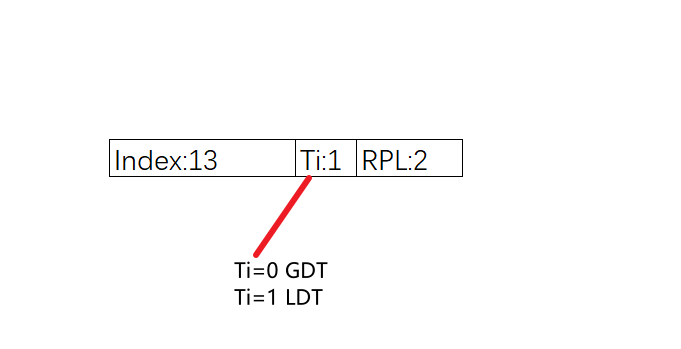
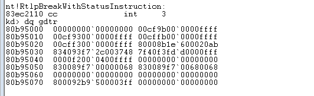

段寄存器长度为96位，其中包含如下成员：
{
selector; //段选择子16位
arrtibute; //段属性16位
limit; //段限长32位
base; //段基址32位
}
其中段选择子即常见的6个段寄存器的数值（也就是我们可见的16位），比如cs,ds,ss,es,fs,gs；其中除cs外，其余段寄存器的低两位为rpl(请求特权级别)，cs的低两位为cpl(当前特权级别)。
{
P; //此描述符是否有效
S; //为0的话，表示此描述符为系统段，否则为代码段
//或者数据段
Type; //当S为1的时候，Type最高位为1则为代码段，最高
//位为0则表示为数据段
DB； //为1则表示，内存寻址为32位，堆栈使用ESP，段大
//小为4GB;0则表示内存寻址为16位，堆栈使用SP，段
//大小为64KB
}
段描述符中”高32位中的8-23位加载到段寄存器的attribute“，本来从段描述符中加载20位的Limit，最大为FFFFF，但如果G位为0，则Limit的单位为1字节，则Limit最大为FFFFF，也就是64K；G位为1，则Limit的单位为4kb，Limit最大为FFFFFFFF，也就是4GB.
mov ax, 0x23;
mov ds, ax;
以上代码运行时会进行权限检查，数据段权限检查是**CPL<=DPL&&RPL<=DPL**,而且当只有对段寄存器写值的时候才会进行权限检查。
GDTR表如下图

0x23
---------------
00100 0 11
4 3
|index| Ti |RPL|
00cff300`0000ffff
4对应的是这个段描述符，可以看的出来它的DPL为3，所以RPL<=DPL,但只要这个汇编代码是在3环(CPL=3)运行的，则权限检查完毕，因为RPL<=DPL&&CPL<=DPL，所以可以将23写进ds。